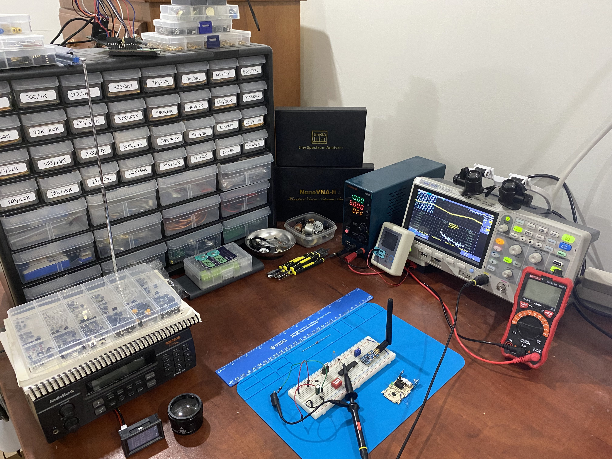
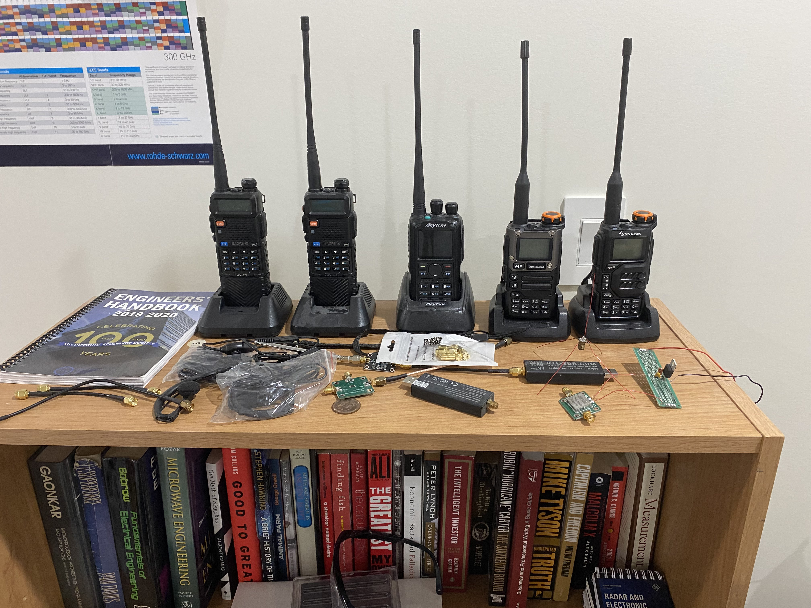

Hi, I’m Ahmed.
I am a fifth year Electrical Engineering Student at the UofA with a focus on RF and Digital IC design. I have a strong passion for electronics, and have built my own electronics lab at home for my personal projects. Currently I'm working with a startup, Pocket Clinic, to implement low-power oscillators for a wearable bio-medical sensing device. For my capstone project, I'm developing an battery-less ultra-low-power RF transmitter for home and industrial automation.


[Experience]
-
Pocket Clinic:Analog Design InternJan 2024 - April 2024
-
Sound Antidote:RF PCB Design InternSeptember 2023 - December 2023
-
Pocket Clinic:Antenna Design InternApril 2023 - Aug 2023
-
AlbertaSat:Satellite Communications Design Team MemberFebruary 2023 - February 2024
-
The Rec Room:Electronics TechnicianJuly 2021 - January 2022